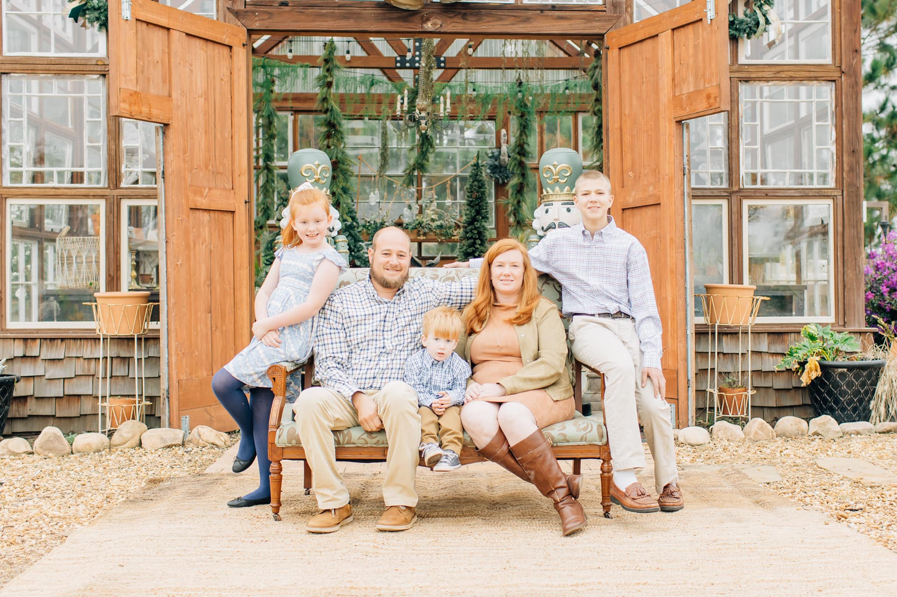

Understand the site
Grade, soil, runoff, access, and the intended discharge point all shape the right plan. The first step is looking at the property as one connected system.

family owned in Moultrie —
Led by Brandon Joins, ECS combines drainage expertise with practical earthwork and site construction for residential and commercial properties.

how ECS works —
Standing water, soft ground, erosion, and repeated washouts are symptoms. ECS looks at the larger site: where the water begins, how the grade influences it, and what the property needs to function better.
That understanding of grade, runoff, access, and soil carries through the rest of the company’s work. Culverts, site preparation, land clearing, driveways, hardscaping, and shoreline work all depend on understanding the ground before construction begins.
Brandon’s approach is direct: communicate clearly, bring the right equipment, and stay focused on the actual field conditions. It is a local family business, and the relationship with the property owner matters alongside the finished work.
original company field note —
Environmental Construction Services works the ground: drainage, land clearing and excavation, landscaping and hardscaping, seawalls and retention, site preparation, culverts, and driveways.
Based at 33 Pine Cone Road, Moultrie, GA. The best way to find out whether we’re the right fit for your project is to call.
Site conditions guide the work.
what clients can expect —
The scope changes from property to property. The standard for understanding it does not.
Grade, soil, runoff, access, and the intended discharge point all shape the right plan. The first step is looking at the property as one connected system.
Brandon and the ECS team put a premium on responsiveness and practical explanations, so the property owner understands what is being built and why.
Drainage, earthwork, culverts, concrete, clearing, and finish work are approached with the same straightforward goal: solve the problem in front of the crew.
client feedback —
“Working with Environmental Construction Services was a fantastic experience. Their attention to detail and commitment to environmental sustainability truly sets them apart. I couldn’t be happier with the transformation they brought to my outdoor space.”
— Whitney Smith
“Brandon and his ECS team are extremely professional and reliable! They were immediately responsive, communicated along the way, and did a fantastic job. The customer service was wonderful. I’d highly recommend Brandon and his Environmental Construction Services team!”
— Marcy Sullivan
“Brandon is a professional and is very conscientious. Always comes when he says and doesn’t leave until the job is done.”
— ECS client
talk with ECS —
Whether the need is drainage, clearing, grading, access, or finished construction, the conversation begins with the property.